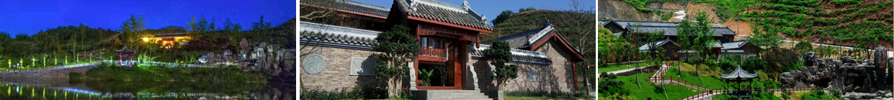

White like a white-haired old man, although experienced vicissitudes of life, but still strong, she is like a thick history, although the heads, but for those with SiGu hard-currency of racy to find ancient mourn.
Bai yi, a bright pearl in northeast sichuan province, has a long history and profound cultural accumulation since the qin and han dynasties. In the meantime, there is a lot of scenery in the middle of the world, leaving a lot of palaces and temples, the arch of the arch, the pavilion of the pavilion, the carved beams, the pavilions, the pavilions, the mansions, the tombs, the elegant style, the exquisite workmanship.
Baiyi is located 20 km south of chengnan county, pingchang county, sichuan province. It was founded in qin and han dynasties, and it is liuzhou. Because there is a huge willows along the river, the huge arms are stretched across the river, and the people are able to travel to the other side. White name, because of the late Ming dynasty guanyin kindness to honor white like, also because of a natural disaster, the qing guangxu years white burnings, one thousand ancient town was destroyed by a torch, the goddess of mercy temple survived, only white men, so named "white", commonly known as "white temple".
Accident of natural river, the river intersection, mighty and through the lens from white, water and land transportation is very convenient, south of jingchu, north to reach the central plains, the potential control of qin shu throat, past dynasties king county a state being built in this county, become the important imperial warlords of the station troops and folk treaty ports, of the 1970 s, a flood that a large amount of ebony, han brick rediscovered; In April 2013, we dug up the bowl hill ancient tombs of the late Ming and early qing dynasties, the first